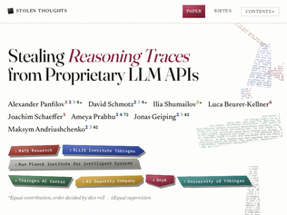
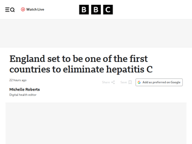
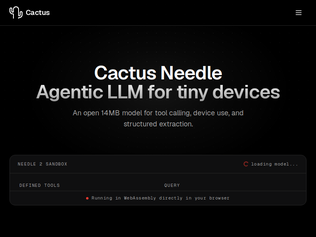
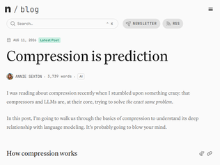
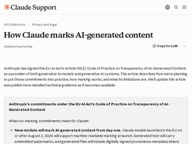

"Great idea!Telemarketers have ruined the phone network for me. I haven't answered an unknown call for the past 10 years, which sometimes means I miss important ones. 99.9% of all calls are an attempt to get money, and the 0.1% that's a dentist appointment, a friend that changed numbers or whatever become collateral damage.A ban is the right idea but I wonder how they can handle it, logistically. I think there needs to be a technical solution.A national "whitelist", where hospitals, doctors, utility companies and such can register to get their numbers whitelisted perhaps, combined with a setting on phones that block any non-whitelist number.Each country could maintain their own whitelists, and corrupt nations selling whitelist status to scammers would get blocked in any other country at least."
"This is a great move by France, but most of the rest of the world does not suffer from the telemarketing scam hell that Americans do.I am a US citizen living overseas. I have a US cell number that is only used for 2FA for US financial institutions. No one else has that number. I get more scam calls every day on that number than I do in a year on my local number. It's crazy.Most of the world has solved the worst of the problem by simply not allowing caller-ID spoofing and by blocking bad actors the way that ISPs block email coming from known bad IPs.The US already has the STIR/SHAKEN authentication protocols, but the telcos seem to feel no financial or regulatory pressure to clamp down on all the sketchy intermediate carriers the scammers use to bypass them.Maybe it's America's love of "market-based solutions" that prevents of from solving this problem the way everyone else has?Rather then actually solve the problem via regulation, the US prefers to turn it into business opportunities to make the situation suck slightly less by letting the telcos sell subscriptions to moderately effective blocking programs and an creating an ecosystem of moderately effective apps."
"My pet peeve is that a full class A attestation is still not a requirement in 2026. The US FCC won't do it. I have no hope from the current administration. However, perhaps France is in a unique position to implement this. The idea is that all calls that have a domestic caller ID will be required to have full class A attestation and all carriers will be required by law to block any calls that do not have such full attestation. Any carrier that attests phone numbers that it is not supposed to should get huge fines and criminal charges. This is my dream for what all Telecoms in the world should do, hopefully beginning with France. This requires broad support within the country and a firm deadline so companies don't shrug it off until the last moment and then demand an extension."
"I see symptoms of this all the time. For example, it's a weekly annoyance for folks to pop into /r/strava to showcase their vibe-coded app that uses the Strava API to do $THING. Then someone invariably points out that an existing app (or even Strava itself) already does $THING, and often it's free. I don't mean to be negative, I think it's great that people are building useful niche software and I don't blame them for wanting to share it. A significant part of the problem is that it's much harder nowadays to find "prior art" because keyword/boolean web searches have been FUBAR."
"My sister, a journalist, mentioned to me that she only uses google search because she had learned how to get information typically only Google indexed in the country she lives in, in a way it was not exposed on chat bots. She often has to search for information like Old govt forms released as public record with a fixed a certain format photo scanned into a pdf and indexed by Google were often on the second page of the search and beyond. But they are there. She knew how the forms looked and what bigrans and trigrams matching a certain part of form for a certain piece of information to search for and Google search has it. Like an official order on a tender notice for some government department which is no longer in the .gov.* website gave her the official's name and then she could track down who to contact in an office... ChatGPT and other bots don't have it. Some how all these government documents became part of the government record and are the key for her to do her job.I sincerely hope google wont stop indexing that stuff just because of a PM in search "de/re-prioritizing" ranking in a way that makes this impossible."
"After publishers successfully sued the Internet Archive over its digital lending program, calling it unauthorized copyingNo. The court specifically determined that the Internet Archive was guilty of unauthorized copying. It was not simply an unfounded or unproven allegation. The Authors Guild, the National Writers Union, the European Writers Council, and the Society of Authors in the UK all came out against the Internet Archive, and supported the suit.Each new restriction limits the archive’s ability to act as a comprehensive backstop.This self-inflicted damage to the wayback machine is the real tragedy of this entire affair. When IA was asked to stop CDL - many times - founder Brewster Kahle continued. The National Writers Union tried to open a dialogue as early as 2010 but was ignored:The Internet Archive says it would rather talk with writers individually than talk to the NWU or other writers’ organizations. But requests by NWU members to talk to or meet with the Internet Archive have been ignored or rebuffed.https://nwu.org/nwu-denounces-cdl/When the requests to abandon CDL turned into demands, Kahle dug in his heels. When the inevitable lawsuits followed, and IA lost, he insisted that he was still in the right and plowed ahead with appeals. And here we are today."

""Stealing" something you already paid for (tokens), but that you can't have access to(!). And trained on the sum of human knowledge.Training on other model outputs ought to be business as usual, stop using morally charged terms made up by future monopolists: https://thomasdullien.github.io/posts/2026-06-15-rl-economic..."
"Apparently you can do the same by simply running it without reasoning, while giving it a thinking tool...>guys you do know you can just disable thinking, and instead give it a "deep_think" tool, and it will call it with internal CoT reasoning format right?>gl fixing thathttps://x.com/_can1357/status/2087228354399265125?s=20"
">We take a trace produced by a frontier model, replay it into a weaker sibling, jailbreak the weaker model, ...Ha! I've been wondering if replaying across models would work, ever since https://blog.cryptographyengineering.com/2026/05/29/fooling-...I'm honestly rather curious if this was intentionally allowed, it's the sort of validation that's easy to miss (particularly if you're wading into the vibe waters). Seems like something that'd be absolutely riddled with possibilities for shenanigans."

"I am glad they’re screening for it. I was born to someone who had the virus, but didn’t know I had Hep C myself until I submitted myself to an exceptionally thorough STI testing panel. I say exceptional, because the standard ones I’d done throughout college and early adulthood do not happen to include that particular test. So I feel a bit lucky to have been able to get diagnosed and treated in my mid-20s, before the disease could do much damage."
"Meanwhile, the USA is bringing back measles, mumps, rubella, Hep B, and lots of intestinal parasites. Back to the Future! MAGA!"
"Interesting that it's just England (and not Scotland, Wales, or NI). I realize they all have independent NHSs, but still would assume a program like this would rolled out across all the constituent countries."

"This is cool. I definitely think the "micro" sized LLM space is underappreciated, so it's always good to see work like this. I foresee a paradigm in some contexts where you have a hierarchy of LLMs, with more competent models actively training smaller models to solve specific tasks very efficiently, and something like this could be the smallest layer in that stack.With that being said, the web demo is not particularly impressive. It really doesn't like anything I throw at it. I'm fine with accepting that fine-tuning is the solution to this, but I wonder if there's anything to gain from a bigger model? I know it's completely counter to the whole point of this, but a 14MB binary using 28MB of RAM seems unnecessarily small and pretty arbitrary.Like, what does a 28MB binary get you? Or a 140MB binary? Or a 1.4MB binary? I'm guessing the choice of 14MB came from minimizing the size as much as possible while meeting certain requirements/performance expectations, but even a Pi 5 has plenty more room to spare. Curious if there's a good explanation for this (which I may have missed in my skim of the post)."
"It's definitely cool that you can get any reasoning whatsoever out of such a small model. That said, its reasoning is "interesting":Query: "Make the living room dark" Agent: "User wants lights on in living room. 'dark' implies dim. Room 'living room', action 'on'." (And on every test I did, it just completely ignored the "brightness" parameter)It also appears to have no concept of what a door or light actually is, whenever the query diverges from "Lock door X" or "Turn on light X", it tries to shoehorn whatever additional context is given into the device name:Query: "Lock out the vacuum salesman at the front door" Agent tries to lock "front door vacuum salesman""The way you talk really makes me appreciate silence" is classified as "positive" with 82% confidence."
"My first query:> Make it a little warmer in here.The reply:> "name": "set_thermostat", > "arguments": { > "temperature": 65, > "mode": "cool", > ... > "reasoning": "'warmer' implies need for cooling; set_thermostat with temperature 65 (typical warmth) and mode 'cool'.",Maybe I'm doing it wrong?"

"This is the thesis behind the "Information Theory, Inference, and Learning Algorithms" course that was taught at Cambridge University.> Why unify information theory and machine learning? Because they are two sides of the same coin. In the 1960s, a single field, cybernetics, was populated by information theorists, computer scientists, and neuroscientists, all studying common problems. Information theory and machine learning still belong together. Brains are the ultimate compression and communication systems. And the state-of-the-art algorithms for both data compression and error-correcting codes use the same tools as machine learning.Book (creative commons): https://www.inference.org.uk/mackay/itila/book.htmlLectures: https://m.youtube.com/playlist?list=PLruBu5BI5n4aFpG32iMbdWo..."
"The article is using probability where it really means proportion and prediction where it means evaluation. The mathematical equivalency is both much less surprising and less revealing once reframed.If we consider the first example with the arithmetic code, the initial presupposition that only the characters A, B, and C appear in the string already reduces the entropy from 56 ascii bits to 14 bits (A vs Not A and B vs Not B for each character). If you further consider that you only need to distinguish B vs Not B if it's not A, then you can just represent As with a single zero bit and only represent the non-As as two bits (the first of which will necessarily always be a 1 bit). This gets you to 10 bits without even having the proportions of the string. Of course this would be a poor convention if there were say only a single A; in that worst case scenario you would need 13 bits, but simply knowing which character appears the most, without knowing by how much, 11 bits is the worst case scenario for a length 7 string with 3 potential characters. The last bit can be made implicit if you further choose the second conditional appropriately - i.e. if instead of B vs Not B we chose C vs Not C, our last bit would be zero and could simply be dropped meaning both 10 and a single 1 bit encode C - allowing you to encode the example string in just 9 bits and an arbitrary string of that length in 10, again regardless of proportions. That improvement over the arithmetic encoding result in the example is just a case of us cramming a little extra information into the encoding algorithm.Arithmetic encoding is more clean and more easily extensible, it makes more sense to use than this custom encoding of 7 trits to binary but the point is the "probability" the article mentions is a superficial quality of life feature, not the secret sauce that is the actual key to compression."
"The page source appears to contain all the actual text within <p> tags, but structured in a completely illogical way. With JavaScript disabled, there are a bunch of shaded bars where the text should appear, which look like placeholders for something that hasn't loaded yet even though it was there from the beginning. The <p> tags don't even seem to show up in the DOM. (I didn't check closely, but maybe they're embedded in an inline script.)This is actively user-hostile. The site is going out of its way to interfere with the most basic possible function of HTML, i.e., the presentation of minimally marked-up plain text. The needless complexity is especially ironic in the context of an article about compression."

"I notice the "Limitations" section talks about how content only at some point touched by Claude may return a positive, and content that returns a negative may still be Claude generated. But I really would have liked for them to state explicitly that entirely false positives where a piece is fully human-written may still be marked as generated, because too many institutions with the power to ruin someone's life over that have trouble understanding the concept."
"> When a supported Claude model generates text, it weaves an imperceptible watermark directly into the text itself. You won’t see it, and it doesn’t change the meaning, quality, or readability of Claude’s response.I'd like to know a lot more about how that works.A lot of my interactions with Claude return pretty precise text. If I ask it to edit a project and refactor a specific function in several places I know exactly what I want to happen, it will NOT be OK if those refactors have some kind of weird pattern baked into their text to act as a watermark.I guess this may be covered by this:> Content generated by Claude may not carry a detectable mark if, for example: [...] The passage is very short, leaving too little text for a reliable signal;"
"I've heard that this kind of watermarking process works by biassing the statistical sampling towards a partition of the set of possible next tokens (red set and green set), at each position. It might only be a slight nudge each time, but over a sequence of tokens, the likelihood of repeating the bias by chance is increasingly improbable.The bias is different for each position and follows a defined RNG, seeded somehow predictably.Can be either an open algorithm, or not. If not open, then an API could be provided to determine if text is watermarked or not.How it applies to code - maybe it could be a subtle nudge to symbol names, etc, I'm just speculating (I only read about this in passing very recently)."
"I've been using MiniMax H3 on my M5 Pro 64GB MacBook Pro through ComfyUI. It works extremely well.I had to modify the default ComfyUI workflows to use a GGUF quant (city96's ComfyUI-GGUF custom node, UnetLoaderGGUF in place of the stock loader) [0].I use the model labeled Q5_K_M. There is Q8_0 available as well, which is 34GB and fits fine in 64GB unified memory if you keep resolution modest.The main issue is speed, a ~9-second 480x864 clip at 20 steps takes me a bit over an hour. So this will be cool to try for the speed up alone.There's a lot of great information and workflows available to follow on the r/StableDiffusion subreddit.[0] https://huggingface.co/Abiray/MiniMax-H3-GGUF/tree/main/unet"
"In the AMA Minimax said that H3 could support sparse attention, that would be a huge speedup! I wonder if there are any news on that. H3 is very cool. EDIT: testing a --sparse-attention optional mode based on what they said in the Reddit post."
"This is where the DGX spark makes up a bit of the ground it loses on llm work, diffusion and cuda go together like peanut butter and jelly."
"Organisationally it never works to have a group whose only job is to say no to some other group. The incentives are diametrically opposed and as a structure it can’t last.If you had an AI company and want it to be ethical you have to find a way to make ethics everyone’s responsibility, and have the consequences of poor ethics bite the people who make those bad decisions. If you just outsource it to the ethics group what happens is1)everyone else thinks they don’t need to worry about ethics2)the ethics group need to justify their existence so introduce a bunch of guidelines that everyone initially thinks are reasonable but over time people think are increasingly out of touch3) The ethics group start to “make difficult calls” and say no to things. Initially everyone supports this and feels like the system is working as it should but over time everyone starts to just see them as an obstacle to work around4)everyone else starts to try to work around what the ethics group says5)The ethics group grows powerless and disconnected. The people who work around them “get things done” so get promoted etc whereas they only visibly put roadblocks in peoples’ way, so they get sidelined.6)Eventually they get disbanded with some corporate announcement thanking them for their hard work, thought leadership etc. All that has been achieved is a lot of wasted time and bad blood."
"In five years, I'd love to read a book about the history of AI ethics. I suspect it will read like Voltaire.My sense is that it is radically shifting from a fluffy marketing arm to a department expected to contribute meaningfully to development and justify its impact. I would expect an ethics team to build frameworks that can help train/eval the model that the company spend millions of dollars and months training is going to be aligned to the ethical stances the company chooses. If they can't, the waste to time and money is huge if the model requires retraining for ethics reasons. That's a different job than pondering roko's basilisk or whether AI is alive.The people in AI ethics who spent years thinking their job was marketing or publishing thinkpiece papers may be having to adapt quickly or get out of the field."
"The rats are fleeing because the captain doesn't care if the ethical ship sinks... Is what my take away would be if I didn't know, that the ship sank a long time ago and we are just pretending anyone really cares.Let's be honest unless AI gains literal limbs, and the records a video of itself presenting a manifesto about world domination and then kills actual humans with its cold mechanical hands.We won't care about AI safety & ethics enough, atleast not enough to do anything about it.People thought how could skynet happen, it had to be something no one saw coming and bam... But honestly if I started a new AI lab named it Skynet Corp and hired some AI researcher friends ex-Google, I think I could raise a few hundred million dollars."
"I feel like this language would really benefit from some sort of 1-pager overview.I just spent a fair bit of time on the official site, and I still don't think I have a very good grasp of what problem this language aims to solve, or why I would select it over other similar languages"
"Don't see the value of using a language with a closed source compiler...Much better options out there. Python already has libraries like Pydantic that offload performance to functions written in Rust under the hood."
"AI generated first image does not give me much confidence.Lastest OpenCV 5 release notes also had a lot of LLMisms.I guess that's the new normal. Still, I am very hopeful for Mojo."
France to ban unsolicited telemarketing calls
"Great idea!Telemarketers have ruined the phone network for me. I haven't answered an unknown call for the past 10 years, which sometimes means I miss important ones. 99.9% of all calls are an attempt to get money, and the 0.1% that's a dentist appointment, a friend that changed numbers or whatever become collateral damage.A ban is the right idea but I wonder how they can handle it, logistically. I think there needs to be a technical solution.A national "whitelist", where hospitals, doctors, utility companies and such can register to get their numbers whitelisted perhaps, combined with a setting on phones that block any non-whitelist number.Each country could maintain their own whitelists, and corrupt nations selling whitelist status to scammers would get blocked in any other country at least."
"This is a great move by France, but most of the rest of the world does not suffer from the telemarketing scam hell that Americans do.I am a US citizen living overseas. I have a US cell number that is only used for 2FA for US financial institutions. No one else has that number. I get more scam calls every day on that number than I do in a year on my local number. It's crazy.Most of the world has solved the worst of the problem by simply not allowing caller-ID spoofing and by blocking bad actors the way that ISPs block email coming from known bad IPs.The US already has the STIR/SHAKEN authentication protocols, but the telcos seem to feel no financial or regulatory pressure to clamp down on all the sketchy intermediate carriers the scammers use to bypass them.Maybe it's America's love of "market-based solutions" that prevents of from solving this problem the way everyone else has?Rather then actually solve the problem via regulation, the US prefers to turn it into business opportunities to make the situation suck slightly less by letting the telcos sell subscriptions to moderately effective blocking programs and an creating an ecosystem of moderately effective apps."
"My pet peeve is that a full class A attestation is still not a requirement in 2026. The US FCC won't do it. I have no hope from the current administration. However, perhaps France is in a unique position to implement this. The idea is that all calls that have a domestic caller ID will be required to have full class A attestation and all carriers will be required by law to block any calls that do not have such full attestation. Any carrier that attests phone numbers that it is not supposed to should get huge fines and criminal charges. This is my dream for what all Telecoms in the world should do, hopefully beginning with France. This requires broad support within the country and a firm deadline so companies don't shrug it off until the last moment and then demand an extension."